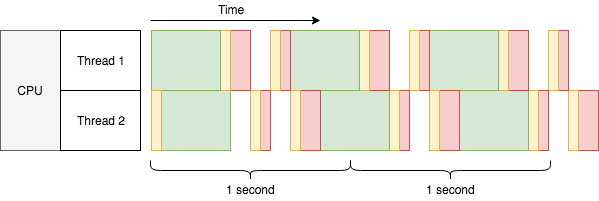

Why Asynchronous ORM?¶
Normally the answer is no, you don’t need an asynchronous ORM. Before moving on, you should read this blog post from Mike Bayer, the author of SQLAlchemy. Though it was written before the project uvloop, but his points are still valid now:
Async is usually not essential for stereotypical database logic;
Async is slower, not faster, measured in single-routine.
Next, we’ll roughly go through what is asynchronous I/O again, and its pros/cons in practice, as well as when asynchronous ORM can be helpful.
The Story¶
Let’s say we want to build a search engine. We’ll use a single core computer to build our index. To make things simpler, our tasks are to fetch web pages (I/O operation), and process their content (CPU operation). Each task looks like this:

We have lots of web pages to index, so we simply handle them one by one:

Let’s assume the time of each task is constant: each second, 2 tasks are done. Thus we can say what the throughput of the current system is 2 tasks/sec. How can we improve the throughput? An obvious answer is to add more CPU cores:

This simply doubles our throughput to 4 tasks/sec, and linearly scales as we add more CPU cores, if the network is not a bottleneck. But can we improve the throughput for each CPU core? The answer is yes, we can use multi-threading:
Wait a second! The 2 threads barely finished 6 tasks in 2 seconds, a throughput of only 2.7 tasks/sec, much lower than 4 tasks/sec with 2 cores. What’s wrong with multi-threading? From the diagram we can see:
There are yellow bars taking up extra time.
The green bars can still overlap with any bar in the other thread, but
non-green bars cannot overlap with non-green bars in the other thread.
The yellow bars are time taken by context switches, a necessary part of allowing multiple threads or processes to run on a single CPU core concurrently. One CPU core can do only one thing at a time (let’s assume a world without Hyper-threading or similar), so in order to run several threads concurrently the CPU must split its time into small slices, and run a little bit of each thread within these slices. The yellow bar is the overhead for the CPU to switch context to run a different thread. The scale is a bit dramatic, but it helps with the point.
Wait again here, the green bars are overlapping between threads. Is the CPU doing two things at the same time? No, the CPU is doing nothing in the middle of the green bar, because it’s waiting for the HTTP response (I/O). That’s how multi-threading could improve the throughput to 2.7 tasks/sec, instead of decreasing it to 1.7 tasks/sec. You may try in real to run CPU-intensive tasks with multi-threading on single core, there won’t be any improvement. Like the multiplexed red bars (in practice there might be more context switches depending on the task), they appear to be running at the same time, but the total time for all to finish is actually longer than running the tasks one by one. That’s also why this is called concurrency instead of parallelism.
As you might imagine, throughput will improve less with each additional thread, until throughput begins to decrease because context switches are wasting too much time, not to mention the extra memory footprint taken by new threads. It is usually not practical to have tens of thousands of threads running on a single CPU core. How, then, is it possible to have tens of thousands of I/O-bound tasks running concurrently on a single CPU core? This is the once-famous C10k problem, usually solved by asynchronous I/O:

Note
Asynchronous I/O and coroutines are two different things, but they usually go together. Here we will stick with coroutines for simplicity.
Awesome! The throughput is 3.7 tasks/sec, nearly as good as 4 tasks/sec of 2 CPU cores. Though this is not real data, compared to OS threads coroutines do take much less time to context switch and have a lower memory footprint, thus making them an ideal option for the C10k problem.
Cooperative multitasking¶
So what is a coroutine?
In the last diagram above, you may have noticed a difference compared to the previous diagrams: the green bars are overlapping within the same thread. That is because the in the last diagram, our code is using asynchronous I/O, whereas the previously we were using blocking I/O. As the name suggests, blocking I/O will block the thread until the I/O result is ready. Thus, there can be only one blocking I/O operation running in a thread at a time. To achieve concurrency with blocking I/O, either multi-threading or multi-processing must be used. In contrast, asynchronous I/O allows thousands (or even more) of concurrent I/O reads and writes within the same thread, with each I/O operation blocking only the coroutine performing the I/O rather than the whole thread. Like multi-threading, coroutines provide a means to have concurrency during I/O, but unlike multi-threading this concurrency occurs within a single thread.
Threads are scheduled by the operating system using an approach called preemptive multitasking. For example, in previous multi-threading diagram there was only one CPU core. When Thread 2 tried to start processing the first web page content, Thread 1 hadn’t finished processing its own. The OS brutally interrupted Thread 1 and shared some resource (time) for Thread 2. But Thread 1 also needed CPU time to finish its processing at the same time, so in turn after a while the OS had to pause Thread 2 and resume Thread 1. Depending on the size of the task, such turns may happen several times, so that every thread may have a fair chance to run. It is something like this:
Thread 1: I wanna run!
OS: Okay, here you go...
Thread 2: I wanna run!
OS: Urh, alright one sec ... Thread 1, hold on for a while!
Thread 1: Well I'm not done yet, but you are the boss.
OS: It won't be long. Thread 2 it's your turn now.
Thread 2: Yay! (&%#$@..+*&#)
Thread 1: Can I run now?
OS: Just a moment please ... Thread 2, give it a break!
Thread 2: Alright ... but I really need the CPU.
OS: You'll have it later. Thread 1, hurry up!
In contrast, coroutines are scheduled by themselves cooperatively with the help of an event manager. The event manager lives in the same thread as the coroutines and unlike the OS scheduler that forces context switches on threads, the event manager acts only when coroutines pause themselves. A thread knows when it wants to run, but coroutines don’t - only the event manager knows which coroutine should run. The event manager may only trigger the next coroutine to run after the previous coroutine yields control to wait for an event (e.g. wait for an HTTP response). This approach to achieve concurrency is called cooperative multitasking. It’s like this:
Coroutine 1: Let me know when event A arrives. I'm done here before that.
Event manager: Okay. What about you, coroutine 2?
Coroutine 2: Um I've got nothing to do here before event B.
Event manager: Cool, I'll be watching.
Event manager: (after a while) Hey coroutine 1, event A is here!
Coroutine 1: Awesome! Let me see ... looks good, but I need event C now.
Event manager: Very well. Seems event B arrived just now, coroutine 2?
Coroutine 2: Oh wonderful! Let me store it in a file ... There! I'm all done.
Event manager: Sweet! Since there's no sign of event C yet, I'll sleep for a while.
(silence)
Event manager: Damn, event C timed out!
Coroutine 1: Arrrrh gotta kill myself with an exception :S
Event manager: Up to you :/
For coroutines, a task cannot be paused externally, the task can only pause itself from within. When there are a lot of coroutines, concurrency depends on each of them pausing from time to time to wait for events. If you wrote a coroutine that never paused, it would allow no concurrency at all when running because no other coroutine would have a chance to run. On the other hand, you can feel safe in the code between pauses, because no other coroutine can run at the same time to mess up shared states. That’s why in the last diagram, the red bars are not interleaved like threads.
Tip
In Python and asyncio, async def declares coroutines, await yields
control to event loop (event manager).
Pros and cons¶
Asynchronous I/O may handle tens of thousands of concurrent I/O operations in the same thread. This can save a lot of CPU time from context switching, and memory from multi-threading. Therefore if you are dealing with lots of I/O-bound tasks concurrently, asynchronous I/O can efficiently use limited CPU and memory to deliver greater throughput.
With coroutines, you can naturally write sequential code that is cooperatively scheduled. If your business logic is complex, coroutines could greatly improve readability of asynchronous I/O code.
However for a single task, asynchronous I/O can actually impair throughput. For
example, for a simple recv() operation blocking I/O would just block until
returning the result, but for asynchronous I/O additional steps are required:
register for the read event, wait until event arrives, try to recv(), repeat
until a result returns, and finally feed the result to a callback. With coroutines,
the framework cost is even larger. Thanks to uvloop this cost has been minimized
in Python, but it is still additional overhead compared to raw blocking I/O.
Timing in Asynchronous I/O is also less predictable because of its cooperative
nature. For example, in a coroutine you may want to sleep for 1 second. However,
if another coroutine received control and ran for 2 seconds, by the time we get
back to the first coroutine 2 seconds have already passed. Therefore, sleep(1)
means to wait for at least 1 second. In practice, you should try your best to make
sure that all code between await finishes ASAP, being literally cooperative.
Still, there can be code outside your control, so it is important to keep this
unpredictibility of timing in mind.
Finally, asynchronous programming is complicated. Writing good asynchronous code is easier said than done, and debugging it is more difficult than debugging similar synchronous code. Especially when a whole team is working on the same piece of asynchronous code, it can easily go wrong. Therefore, a general suggestion is to use asynchronous I/O carefully for I/O-bound high concurrency scenarios only. It’s not a drop-in that will provide a performance boost, but more like a sharp blade for concurrency with two edges. And if you are dealing with time-critical tasks, think again to be sure.
About Database and ORM¶
Finally, GINO. We assume a scenario that asynchronous I/O is anyway required for the server itself, regardless of how we handle the database.
We now know that asynchronous I/O is for I/O intensive tasks. But isn’t it I/O intensive to frequently talk to a remote database? It depends. Like Mike said, “intensive” is relative to your actual code. Modern databases are very fast and reliable, network is reliable if put in LAN. If actual database access time is of the minority of the total time taken by the program, it is not I/O intensive. Using asynchronous I/O for database connections and queries in this case will not improve throughput much, and may make it worse due to asynchronous framework overheads mentioned earlier. It looks easier to just use blocking database operations in your coroutines instead without harming performance.
Using blocking operations in coroutines carries a high risk of causing dead locks. For example, imagine a coroutine starts a transaction and updates a row before yielding control. A second coroutine tries to update the same row before the first coroutine closes the transaction. This second coroutine will block on the non-async update, waiting for the row lock to be released and preventing any other coroutine running. However, releasing the lock is in the first coroutine which is now blocked by the second coroutine. Thus it will block forever.
This may happen even if you optimized all database interactions to be as quick as possible. Race conditions happen under pressure, and anything that can block will eventually block. Therefore, don’t call blocking methods in coroutines, ever. (Unless you are 100% sure it won’t cause a dead lock)
A simple fix would be to defer the database operations into threads, so that they won’t block the main thread and thus won’t cause a dead lock easily. It usually works and there is even a library to do so. However when it comes to ORM, things become dirty.
Traditional ORMs are usually implicit for convenience, lazy property loading
for example. In a larger project, you never know which statement has a side
effect to make an implicit database call, and block the main thread. Since you
cannot put only the underlying database access into the thread pool (you need
to await on the deferred database call), you’ll start putting pieces of
code into the thread pool. But because coroutines run only in the main thread, your
code starts to fall apart. This is usually the time when I suggest to separate
the server into two parts: “normal blocking with ORM” and “asynchronous without
ORM”.
This is where GINO can be useful: it provides the convenience of database abstraction in a classic asynchronous context. And thanks to asyncpg, the asynchronous overhead is by far exceeded by its incredible performance boost.